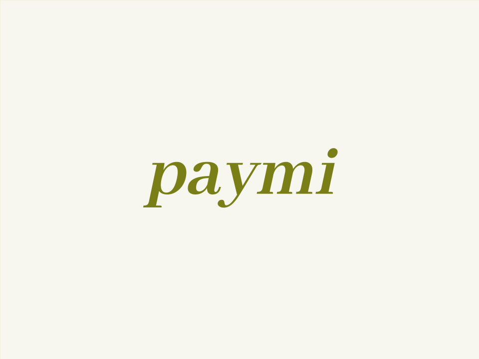
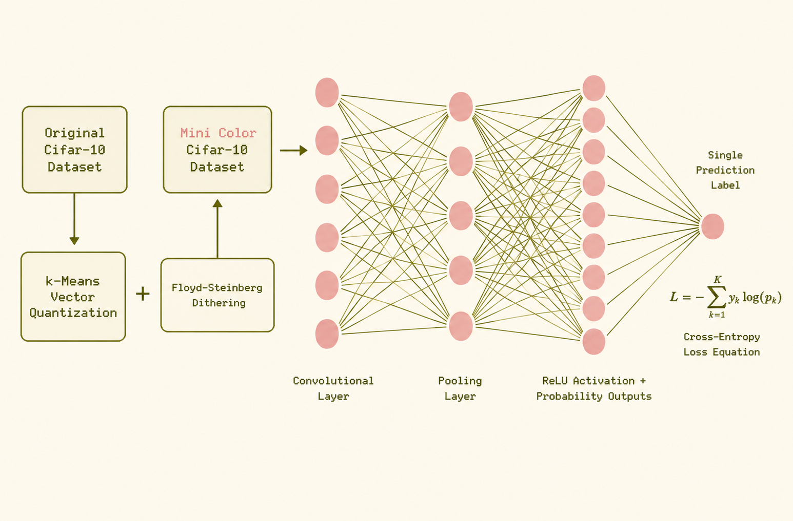
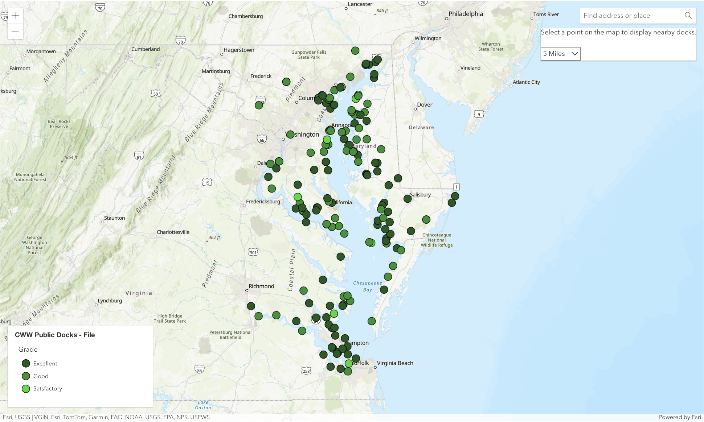
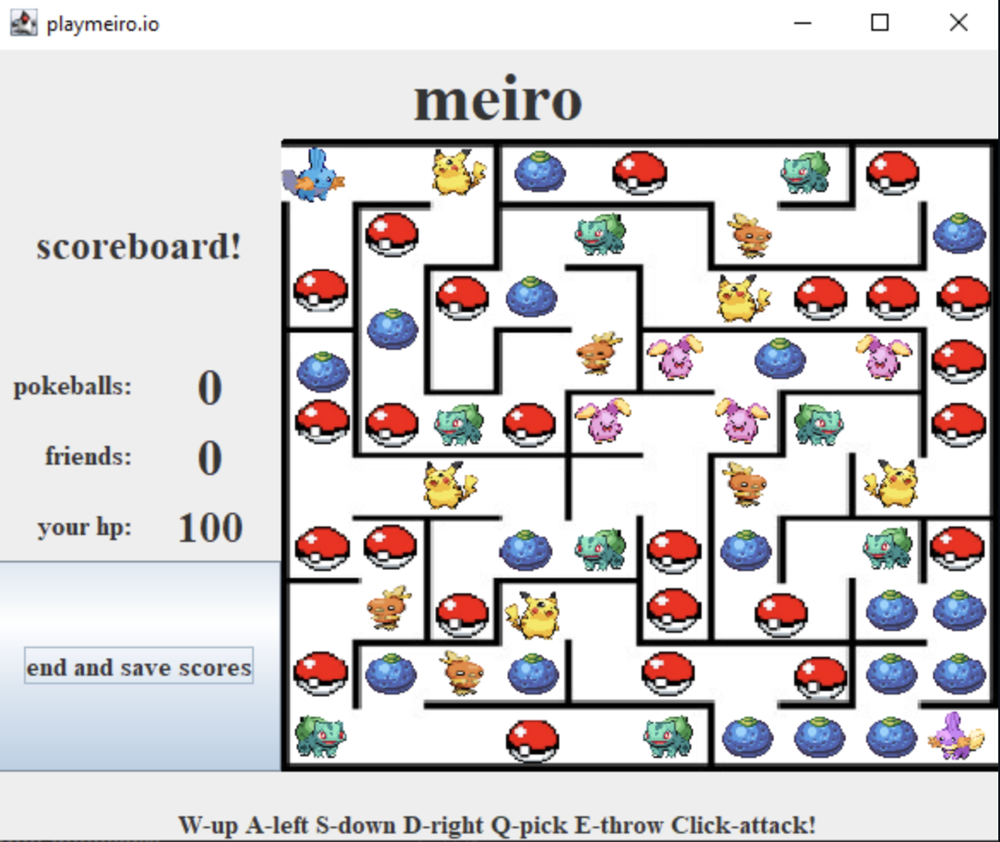
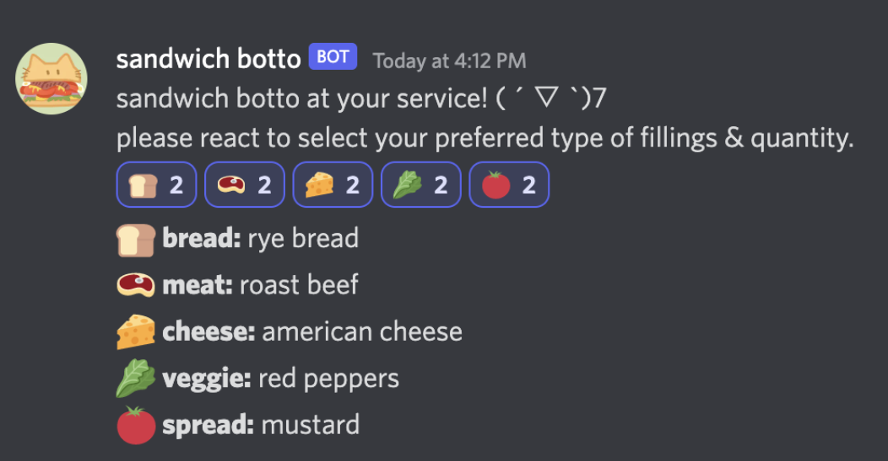

(WIP:) paymi
A description for this project is currently unavailable. Please check back later!

mini color nn
Mini bags, mini gadgets,
mini this, mini that…
now meet the mini CIFAR-10 dataset.
Who knew 60,000 images could be so byte-sized!

chesapeake
Interactive map of Chesapeake Bay water sampling stations,
developed for Smithsonian Environmental Research Center
to aid NASA data collection.

meiro
Escape a maze with your Mudkip, avoid wild Pokémon,
collect pokéballs, and rescue the Shiny.
Different characters have unique abilities and health.

sandwich botto
Discord bot that randomly generates all kinds
of sandwiches with all kinds of fillings!
Verified Discord Developer Portal bot.